Análisis exploratorio del Dengue en Colombia#
Reporte basado en datos de SIVIGILA
El dengue es una enfermedad viral aguda, causada por un virus transmitido a través de la picadura de mosquitos infectados. Esta representa una de las principales amenazas para la salud pública en regiones tropicales y subtropicales, afectando anualmente a millones de personas en todo el mundo (OMS, 2023).
Este informe presenta un análisis exploratorio de los casos reportados en Colombia entre 2013 y 2018, utilizando datos de SIVIGILA.
Descripción de los datos#
El dataset analizado contiene 500,444 registros y 22 variables de interés, entre las cuales se encuentran:
Información demográfica: edad, sexo, tipo de seguridad social.
Ubicación: departamento y municipio donde ocurrió el caso.
Variables temporales: año de ocurrencia y semana epidemiológica.
Datos clínicos: estado del caso, hospitalización, confirmación.
Requerimientos e importaciones#
Show code cell source
# Requeriments
#!pip install pandas
#!pip install numpy
#!pip install readxl
#!pip install matplotlib
#!pip install seaborn
#!pip install scipy
import warnings
warnings.filterwarnings("ignore")
# Librerias
import pandas as pd
import numpy as np
import matplotlib.pyplot as plt
import seaborn as sns
import scipy.stats as stats
Lectura de archivos y selección de variables de interes#
<class 'pandas.core.frame.DataFrame'>
RangeIndex: 500444 entries, 0 to 500443
Data columns (total 21 columns):
# Column Non-Null Count Dtype
--- ------ -------------- -----
0 EDAD_AJUSTADA 500424 non-null float64
1 SEXO 500444 non-null object
2 TIP_SS 500444 non-null object
3 GP_MIGRANT 500444 non-null int64
4 GP_POBICFB 500444 non-null int64
5 GP_GESTAN 500444 non-null int64
6 AREA 500444 non-null int64
7 PAIS_OCU 500444 non-null object
8 DPTO_OCU 500444 non-null object
9 MUN_OCU 500444 non-null object
10 SEMANA 500444 non-null int64
11 ANO 500444 non-null int64
12 EVENTO 500444 non-null object
13 TIP_CAS 500444 non-null int64
14 ESTADO_FINAL 492156 non-null float64
15 CASO 492156 non-null object
16 PAC_HOS 500444 non-null int64
17 CON_FIN 500444 non-null int64
18 confirmados 500444 non-null int64
19 FEC_CON 500352 non-null datetime64[ns]
20 INI_SIN 500391 non-null datetime64[ns]
dtypes: datetime64[ns](2), float64(2), int64(10), object(7)
memory usage: 80.2+ MB
Note
El dataset cuenta con 500444 registros, de los cuales se seleccionaron 20 variables de interés para el análisis exploratorio.
Descriptivo de variables#
Valores nulos#
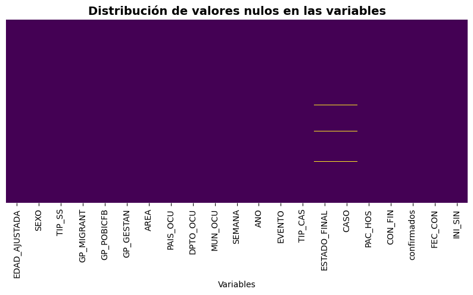
Tabla de valores faltantes
| Variable | Cantidad_NA | Porcentaje_NA | |
|---|---|---|---|
| 0 | EDAD_AJUSTADA | 20 | 0.003996 |
| 14 | ESTADO_FINAL | 8288 | 1.656129 |
| 15 | CASO | 8288 | 1.656129 |
| 19 | FEC_CON | 92 | 0.018384 |
| 20 | INI_SIN | 53 | 0.010591 |
Las variables “Edad”, “Estado final”, “Caso”, “Fecha consulta”, “Fecha inicio de síntomas” y “Fecha hospitalización”, presentan datos perdidos. En su mayoría el porcentaje de pérdida es menor al \(5\%\), por lo que para efectos del análisis descriptivo no se realizará imputación de datos.
Información demográfica#
Edad#
Note
Para la variable edad se realizó un ajuste dependiendo la unidad de medida registrada. Los valores registrados en tiempo en meses, semanas o días se tomarán con valor referencial de 1 año.
Variable edad de los pacientes
count 500424.000000
mean 25.339240
std 19.895208
min 1.000000
25% 10.000000
50% 20.000000
75% 37.000000
max 114.000000
Name: EDAD_AJUSTADA, dtype: float64
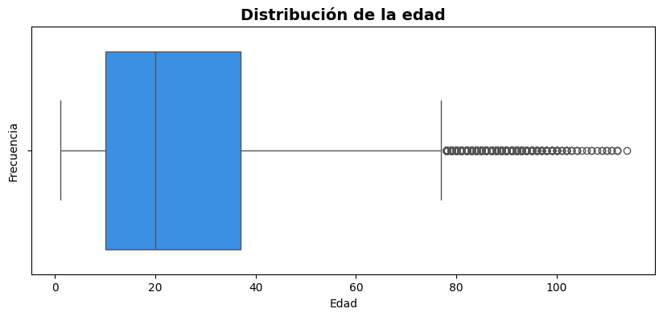
# Valor de asimetria
skewness = stats.skew(df['EDAD_AJUSTADA'].dropna())
print(f"Valor de asimetría: {skewness}")
Valor de asimetría: 0.9486048462139235
En la Figura 2 se muestra la distribución de la edad de los pacientes, la cual varía entre \(1\) y \(114\) años, con una media de \(25\) años (\(\pm 19.9\)). La mayor concentración de casos se encuentra en el rango de \(10\) a \(37\) años.
Se identifican valores atípicos a partir de los \(77\) años, con casos aislados de personas en edades avanzadas. La distribución de la edad exhibe una marcada asimetría positiva \((0.94)\).
Grupo de edad menores a 5 años#
Distribución edad de los pacientes
| Edad | Pacientes | Porcentaje | |
|---|---|---|---|
| 0 | 1.0 | 24917 | 36.245 |
| 1 | 5.0 | 12202 | 17.749 |
| 2 | 4.0 | 11444 | 16.647 |
| 3 | 3.0 | 10412 | 15.146 |
| 4 | 2.0 | 9771 | 14.213 |
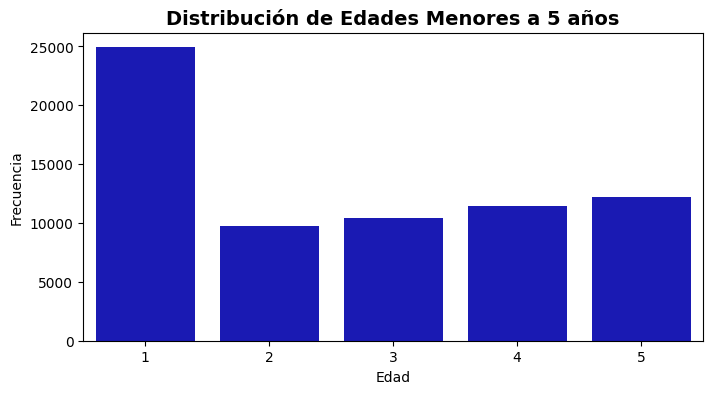
En el grupo etario de menores a 5 años, en su mayoría (36.34%) tienen 1 año.
Grupo de edad mayores a 65 años#
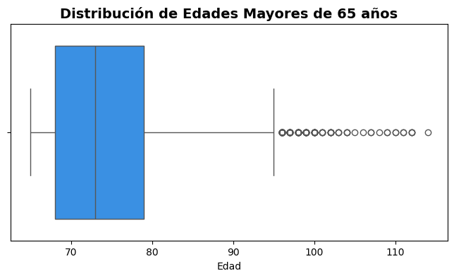
En la Figura 3, el diagrama de cajas y bigotes representa la distribución de la edad de los pacientes mayores de \(65\) años. El rango intercuartil (\(50\%\) central de los datos) se encuentra entre los \(68\) y \(79\) años. A partir de los \(95\) años se identifican valores atípicos, correspondientes a pacientes de edad avanzada.
General#
SEXO
M 52.495984
F 47.504016
Name: proportion, dtype: float64
Tipo de aseguradora
TIP_SS
C 48.953329
S 40.877101
N 4.069586
E 2.977356
P 2.797116
I 0.325511
Name: proportion, dtype: float64
Pertenencia a grupos de interés
Grupo de Pertenencia Cantidad de Personas
0 GP_MIGRANT 1192
1 GP_GESTAN 3611
2 GP_POBICFB 742
AREA
1 81.931645
2 9.087131
3 8.981225
Name: proportion, dtype: float64
La distribución por sexo es relativamente equilibrada, con un \(52.5\%\) de los pacientes siendo hombres y un \(47.5\%\) mujeres. En cuanto a la afiliación al sistema de salud, la mayoría de los pacientes están vinculados al régimen contributivo (\(48.95\%\)) o al régimen subsidiado (\(40.87\%\)).
Respecto a los grupos de pertenencia, se identificaron \(1192\) personas migrantes, \(3611\) pertenecientes a la población gestante y \(742\) asociadas al Instituto Colombiano de Bienestar Familiar (ICBF).
En relación con el área de residencia, la mayoría de los casos (\(81.9\%\)) se registraron en cabeceras municipales, mientras que un \(9.1\%\) ocurrieron en centros poblados y un \(8.9\%\) en zonas rurales dispersas.
Ubicación#
Departamentos#
Top 10 departamentos de mayor ocurrencia
| Departamento | Casos | |
|---|---|---|
| 0 | VALLE | 86298 |
| 1 | ANTIOQUIA | 55248 |
| 2 | SANTANDER | 50337 |
| 3 | TOLIMA | 42990 |
| 4 | META | 31442 |
| 5 | NORTE SANTANDER | 29661 |
| 6 | ATLANTICO | 24657 |
| 7 | HUILA | 23393 |
| 8 | CUNDINAMARCA | 18600 |
| 9 | CESAR | 16456 |
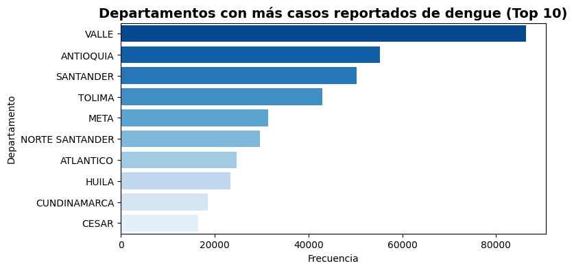
En la Figura 5, el diagrama de barras muestra los 10 departamentos con mayor número de casos de dengue en Colombia. Valle del Cauca encabeza la lista con \(86,298\) casos, seguido de Antioquia con \(55,248\) y Santander con \(50,337\).
Por otro lado, los departamentos con menor cantidad de casos reportados son Vaupés \((54)\), San Andrés \((433)\), Guainía \((543)\), Vichada \((838)\) y los casos procedentes del exterior \((906)\).
Departamentos por densidad poblacional#
Note
Para el análisis demográfico, se han tomado los datos proporcionados por el censo poblacional del DANE (2018) para referenciar la cantidad de casos por población.
---------------------------------------------------------------------------
FileNotFoundError Traceback (most recent call last)
Cell In[20], line 2
1 # Cargado datos
----> 2 deptos = pd.read_excel(r"C:\Users\danie\Dengue\Dengue_fill\Datos\poblacion_departamentos.xlsx")
3 deptos["Población"] = deptos["Población"].astype("Int64")
File c:\Users\Hp\anaconda3\envs\Data_dengue\lib\site-packages\pandas\io\excel\_base.py:495, in read_excel(io, sheet_name, header, names, index_col, usecols, dtype, engine, converters, true_values, false_values, skiprows, nrows, na_values, keep_default_na, na_filter, verbose, parse_dates, date_parser, date_format, thousands, decimal, comment, skipfooter, storage_options, dtype_backend, engine_kwargs)
493 if not isinstance(io, ExcelFile):
494 should_close = True
--> 495 io = ExcelFile(
496 io,
497 storage_options=storage_options,
498 engine=engine,
499 engine_kwargs=engine_kwargs,
500 )
501 elif engine and engine != io.engine:
502 raise ValueError(
503 "Engine should not be specified when passing "
504 "an ExcelFile - ExcelFile already has the engine set"
505 )
File c:\Users\Hp\anaconda3\envs\Data_dengue\lib\site-packages\pandas\io\excel\_base.py:1550, in ExcelFile.__init__(self, path_or_buffer, engine, storage_options, engine_kwargs)
1548 ext = "xls"
1549 else:
-> 1550 ext = inspect_excel_format(
1551 content_or_path=path_or_buffer, storage_options=storage_options
1552 )
1553 if ext is None:
1554 raise ValueError(
1555 "Excel file format cannot be determined, you must specify "
1556 "an engine manually."
1557 )
File c:\Users\Hp\anaconda3\envs\Data_dengue\lib\site-packages\pandas\io\excel\_base.py:1402, in inspect_excel_format(content_or_path, storage_options)
1399 if isinstance(content_or_path, bytes):
1400 content_or_path = BytesIO(content_or_path)
-> 1402 with get_handle(
1403 content_or_path, "rb", storage_options=storage_options, is_text=False
1404 ) as handle:
1405 stream = handle.handle
1406 stream.seek(0)
File c:\Users\Hp\anaconda3\envs\Data_dengue\lib\site-packages\pandas\io\common.py:882, in get_handle(path_or_buf, mode, encoding, compression, memory_map, is_text, errors, storage_options)
873 handle = open(
874 handle,
875 ioargs.mode,
(...)
878 newline="",
879 )
880 else:
881 # Binary mode
--> 882 handle = open(handle, ioargs.mode)
883 handles.append(handle)
885 # Convert BytesIO or file objects passed with an encoding
FileNotFoundError: [Errno 2] No such file or directory: 'C:\\Users\\danie\\Dengue\\Dengue_fill\\Datos\\poblacion_departamentos.xlsx'
Departamentos con mayor densidad de casos
Departamento Casos Población Densidad_Casos
24 GUAVIARE 2566 73081 3511.172535
3 TOLIMA 42990 1228763 3498.640503
4 META 31442 919129 3420.847346
14 CASANARE 10244 379892 2696.555863
16 PUTUMAYO 7347 283197 2594.307143
2 SANTANDER 50337 2008841 2505.773229
13 QUINDIO 12621 509640 2476.453968
7 HUILA 23393 1009548 2317.175607
0 VALLE 86298 3789874 2277.067786
5 NORTE SANTANDER 29661 1346806 2202.321641
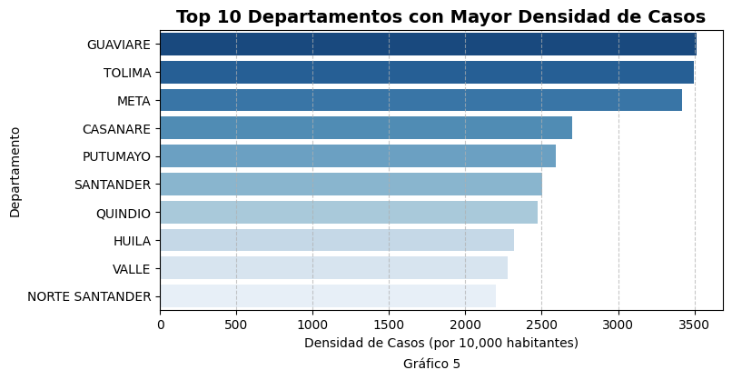
El gráfico describe los departamentos con mayor densidad de casos por cada \(100,000\) habitantes. Guaviare es el departamento con la mayor densidad de casos \((351.12)\), seguido por Tolima \((349.86)\) y Meta \((342.08)\).
Es importante destacar que Guaviare, a pesar de tener a población baja (\(72,081\) habitantes), registra la mayor densidad de casos. Por otro lado, Tolima y Meta no solo están entre los 10 departamentos con más casos, sino que también presentan alta carga de casos en relación con su población. Finalmente, Casanare y Putumayo, a pesar de contar con una población relativamente baja, también presentan altos índices de densidad de casos.
Municipios#
tabla_mun = pd.DataFrame({
"Mayor ocurrencia": df["MUN_OCU"].value_counts().nlargest(10).index,
"Casos": df["MUN_OCU"].value_counts().nlargest(10).values,
})
print("Top 10 municipios de mayor ocurrencia")
tabla_mun
Top 10 municipios de mayor ocurrencia
| Mayor ocurrencia | Casos | |
|---|---|---|
| 0 | CALI | 62954 |
| 1 | MEDELLIN | 29978 |
| 2 | IBAGUE | 17503 |
| 3 | CUCUTA | 16361 |
| 4 | VILLAVICENCIO | 15634 |
| 5 | BUCARAMANGA | 15602 |
| 6 | BARRANQUILLA | 11274 |
| 7 | NEIVA | 10405 |
| 8 | FLORIDABLANCA | 9245 |
| 9 | SINCELEJO | 7839 |
Show code cell source
# Gráfico
plt.figure(figsize=(8, 4))
df_filtered_mun = df["MUN_OCU"].value_counts().nlargest(10)
sns.barplot( x = df_filtered_mun.values, y = df_filtered_mun.index,
palette="Blues_r", hue = df_filtered_mun.index, saturation=1)
plt.title("Municipios con más casos reportados de dengue (Top 10)", fontsize=14, fontweight="bold")
plt.xlabel("Frecuencia")
plt.ylabel("Municipios")
plt.show()
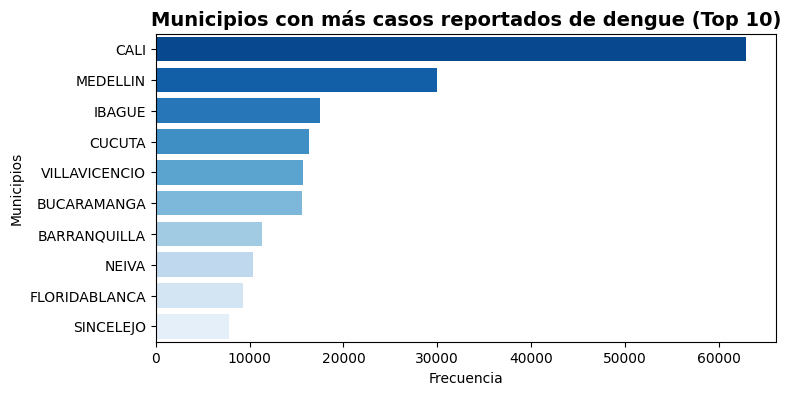
En la Figura 6, el diagrama de barras presenta los 10 municipios con mayor número de casos de Dengue en Colombia. Cali es la ciudad con el mayor número de casos reportados, con \(62,954\) observaciones, seguida por Medellín \(29,978\) e Ibagué \(17,503\), con una diferencia significativa respecto a la primera.
Temporales#
Semana#
La variable representa la semana epidemiológica en la que ocurrió el evento de acuerdo al calendario Colombiano para cada año. Tener en cuenta que en el año \(2014\) se requirió de adición de la semana 53.
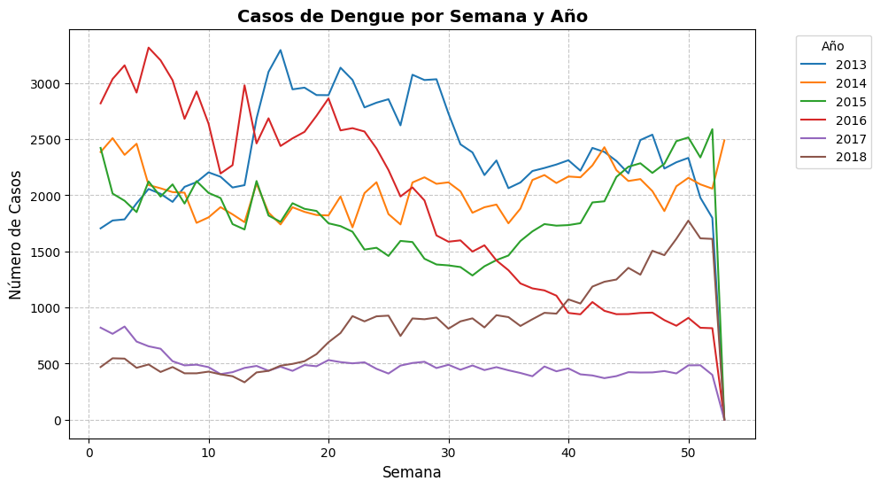
La Figura 7, muestra la distribución de casos por semana para cada año estudiado. En \(2016\), los casos registrados muestran una tendencia a la baja a lo largo del año. En contraste, en \(2018\), los casos aumentaron con el transcurso de las semanas. Los años \(2013\) y \(2014\) presentan mayor número de casos reportados por semana, mientras que el año \(2015\) se caracteriza por una alta fluctuación en el número de casos semanales. Por otro lado, \(2017\) fue el año con menor número de casos registrados.
Top 10 de Semanas con mayor ocurrencia
| Semana | Casos | |
|---|---|---|
| 4 | 1 | 10620 |
| 2 | 2 | 10647 |
| 3 | 3 | 10628 |
| 0 | 5 | 10732 |
| 8 | 6 | 10323 |
| 9 | 15 | 10322 |
| 7 | 19 | 10345 |
| 5 | 20 | 10546 |
| 1 | 21 | 10714 |
| 6 | 22 | 10440 |
Cabe resaltar que las semanas con mayor número de casos reportados se encuentran entre la semana 1 y la 6, así como en la semana 19 y la 22. En cambio, las semanas con menor notificación de casos corresponden al periodo entre la semana 32 y la 41.
Datos clínicos#
Evento#
Los casos de dengue en el reporte fueron catalogados como Dengue y Dengue grave. Del total de casos solo el \(1.76\%\) fue catalogado como Dengue grave.
Distribución de eventos
| Evento | Pacientes | Porcentaje | |
|---|---|---|---|
| 0 | DENGUE | 491637 | 98.24 |
| 1 | DENGUE GRAVE | 8807 | 1.76 |
Evento por años#
Cantidad de eventos por año
| EVENTO | DENGUE | DENGUE GRAVE |
|---|---|---|
| ANO | ||
| 2013 | 122441 | 3113 |
| 2014 | 105356 | 2619 |
| 2015 | 95023 | 1421 |
| 2016 | 100117 | 899 |
| 2017 | 25048 | 236 |
| 2018 | 43652 | 519 |
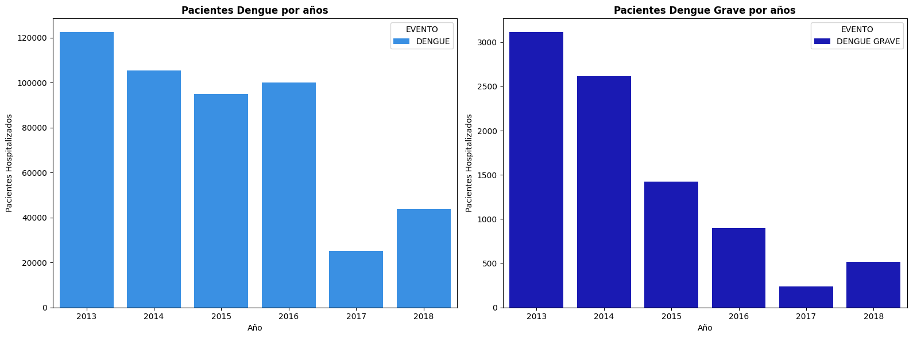
En la Figura 8 se presenta la cantidad de pacientes hospitalizados por Dengue y Dengue Grave en Colombia, a lo largo de los años \(2013\) a \(2018\). Para el Evento Dengue, del \(2013\) a \(2016\) tiene la mayor de casos, con una caída abrupta para el año \(2017\). Mientras que, para el Evento Dengue grave, del \(2013\) a \(2017\), la cantidad de pacientes sigue una tendencia decreciente.
Decesos por evento#
Cantidad de decesos por evento
| Evento | Decesos | |
|---|---|---|
| 0 | DENGUE GRAVE | 239 |
| 1 | DENGUE | 14 |
Solo el \(0.05\)% de los pacientes murieron a causa de la enfermedad.
Estado del caso#
El estado de confirmación del caso por paciente fue catalogado como probable, confirmado por laboratorio o confirmado por nexo epidemiológico. Tomado un estado de referencia para el inicio de la notificación de la enfermedad y otro al final del registro.
Estado del caso
| Nombre del Caso | Caso inicial | Caso final | |
|---|---|---|---|
| 0 | Probable | 386002 | 260957 |
| 1 | Confirmado por laboratorio | 108799 | 205010 |
| 2 | Confirmado por Nexo Epidemiológico | 5643 | 26189 |
Confirmación de casos por año
| ANO | 2013 | 2014 | 2015 | 2016 | 2017 | 2018 |
|---|---|---|---|---|---|---|
| CASO | ||||||
| Confirmado por Nexo Epidemiológico | 4491 | 5254 | 5996 | 7022 | 1306 | 2120 |
| Confirmado por laboratorio | 57641 | 46357 | 32330 | 40931 | 6399 | 21352 |
| Probable | 60309 | 53745 | 56697 | 52164 | 17343 | 20699 |
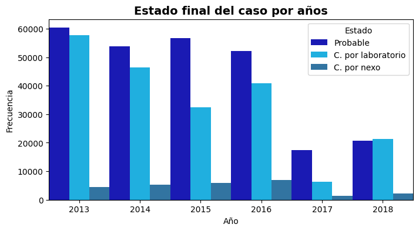
La Figura 9 muestra la distribución del estado final de los casos de Dengue en Colombia entre el \(2013\) y \(2018\), diferenciando entre los casos probables, confirmados por laboratorio y confirmados por nexo epidemiológico. Se observa entre el \(2013\) y \(2016\), predominan los casos probables y confirmados por laboratorio, con una disminución significativa en \(2017\), año con el menor número de registros. En \(2018\), los casos confirmados por laboratorio superan ligeramente a los probables. Los casos confirmados por nexo se mantienen en una proporción baja a lo largo de los años, creciente entre él \(2013\) y \(2016\).
Confirmados#
Para la notificación de cada caso, la variable de confirmación toma el valor 1 para casos confirmados y 0 para casos no confirmados
Cantidad de casos confirmados
| Confirmados | Pacientes | |
|---|---|---|
| 0 | 0 | 263072 |
| 1 | 1 | 237372 |
Confirmación de casos por año
| ANO | 2013 | 2014 | 2015 | 2016 | 2017 | 2018 |
|---|---|---|---|---|---|---|
| confirmados | ||||||
| 0 | 61147 | 54481 | 57024 | 52304 | 17417 | 20699 |
| 1 | 64407 | 53494 | 39420 | 48712 | 7867 | 23472 |
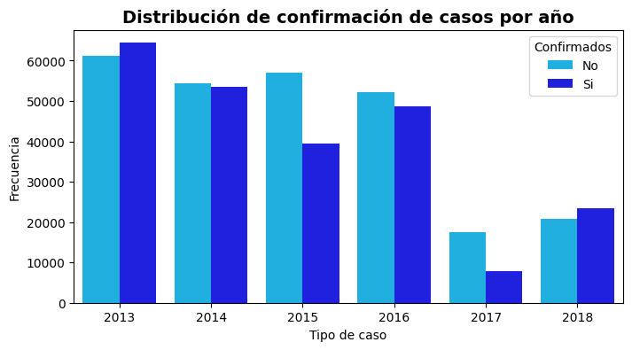
La Figura 10 muestra la distribución de la confirmación de casos por año en un periodo de \(2013\) a \(2018\). Se observa que la cantidad de casos confirmados sigue una tendencia decreciente de \(2013\) a \(2016\), con una caída abrupta en \(2017\) y un ligero aumento en 2018. Por otro lado, en los años \(2014\) al \(2017\), la cantidad de casos no confirmados fue superior a la de casos confirmados.
Hospitalización#
Pacientes que requirieron hospitalización por enfermedad, se clasifica en (1) Hospitalizados (2) No Hospitalizados.
Distribución de hospitalizados
| Hospitalizacion | Pacientes | Porcentaje | |
|---|---|---|---|
| 0 | 2 | 315801 | 63.104 |
| 1 | 1 | 184643 | 36.896 |
Hospitalización de pacientes por año#
Cantidad de pacientes hospitalizados por año
| No Hospitalizado (2) | Hospitalizado (1) | |
|---|---|---|
| ANO | ||
| 2013 | 49735 | 75819 |
| 2014 | 39345 | 68630 |
| 2015 | 34390 | 62054 |
| 2016 | 30328 | 70688 |
| 2017 | 9035 | 16249 |
| 2018 | 21810 | 22361 |
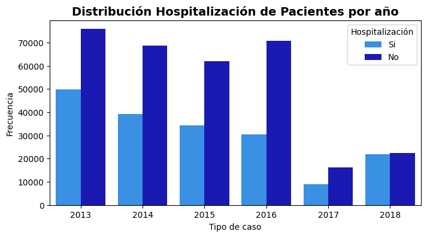
La Figura 11 muestra el comportamiento de hospitalización de pacientes por año. Entre \(2013\) y \(2015\), la cantidad de pacientes No Hospitalizados mostró una tendencia descendente hasta el \(2016\). En contraste, la cantidad de pacientes hospitalizados presentó una disminución continua desde \(2013\) hasta \(2017\). Finalmente, en \(2018\), ambos grupos alcanzaron un nivel similar, mostrando una distribución equitativa entre hospitalizados y no hospitalizados.
Pacientes Hospitalizados por sexo#
<matplotlib.legend.Legend at 0x24123499910>
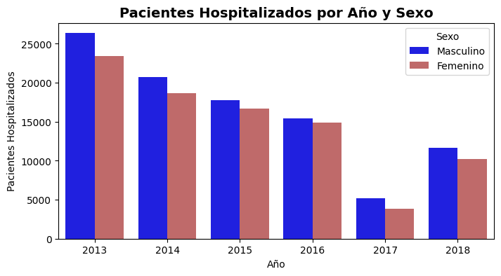
La Figura 12 muestra la distribución de pacientes hospitalizados según su sexo a lo largo de los años registrados. En todos los años, la cantidad de pacientes de sexo masculino supera notablemente a la de pacientes femeninos.
Pacientes hospitalizados por evento#
Hospitalización de pacientes por evento
| No Hospitalizado (1) | Hospitalizado (2) | |
|---|---|---|
| EVENTO | ||
| DENGUE | 176983 | 314654 |
| DENGUE GRAVE | 7660 | 1147 |
Pruebas paramétricas#
Prueba chi-cuadrado#
Para las variables clínicas de interés se quiere saber cuál es la relación entre estas y sus posibles relaciones.
Tabla cruzada prueba chi Cuadrado
| Variable 1 | Variable 2 | Chi2 | Valor p | Decisión | |
|---|---|---|---|---|---|
| 0 | PAC_HOS | SEMANA | 1543.7076 | 0.0000 | Hay relación |
| 1 | PAC_HOS | SEXO | 0.5321 | 0.4657 | No hay relación |
| 2 | PAC_HOS | EVENTO | 9654.7541 | 0.0000 | Hay relación |
| 3 | CON_FIN | PAC_HOS | 281.7138 | 0.0000 | Hay relación |
| 4 | CON_FIN | SEMANA | 108.4131 | 0.3640 | No hay relación |
| 5 | CON_FIN | SEXO | 2.7500 | 0.2528 | No hay relación |
| 6 | CON_FIN | EVENTO | 12583.4615 | 0.0000 | Hay relación |
| 7 | confirmados | PAC_HOS | 20156.4926 | 0.0000 | Hay relación |
| 8 | confirmados | CON_FIN | 87.9502 | 0.0000 | Hay relación |
| 9 | confirmados | SEXO | 132.4649 | 0.0000 | Hay relación |
| 10 | confirmados | SEMANA | 1172.7880 | 0.0000 | Hay relación |
Resultados:
Hospitalización: Está relacionada con la semana epidemiológica y el tipo de evento. Puede indicar brotes en periodos del año.
Condición final: El desenlace final se ve afectado por la hospitalización y el evento. Tasas de mortalidad por casos.
Casos confirmados: La hospitalización está altamente relacionada con la confirmación de casos, así como la condición final. El sexo y la semana influyen en la cantidad de casos confirmados. El número de confirmados cambia según la semana y afecta la hospitalización y desenlace.
Sin relación: El sexo no tiene impacto significativo en el desenlace final o en la hospitalización. La semana no influye en el desenlace final.
Prueba U#
Se analiza si la diferencia entre la fecha de inicio de síntomas y la fecha de consulta influye en la hospitalización o la confirmación del caso.
Prueba Mann-Whitney U para Hospitalización:
Estadístico U: 31707588307.5
Valor p: 0.0000
Diferencia significativa en la demora según Hospitalización.
Prueba Mann-Whitney U para Confirmación de Casos:
Estadístico U: 36757938149.5
Valor p: 0.0000
Diferencia significativa en la demora según Confirmación de Casos.
Los resultados de la prueba de Mann-Whitney U indican que existe una diferencia estadísticamente significativa en la demora en consulta según la hospitalización y la confirmación de casos (p < 0.05 en ambos casos). Esto sugiere que el tiempo transcurrido entre el inicio de los síntomas y la consulta médica varía de manera importante entre pacientes hospitalizados y no hospitalizados, así como entre casos confirmados y no confirmados.